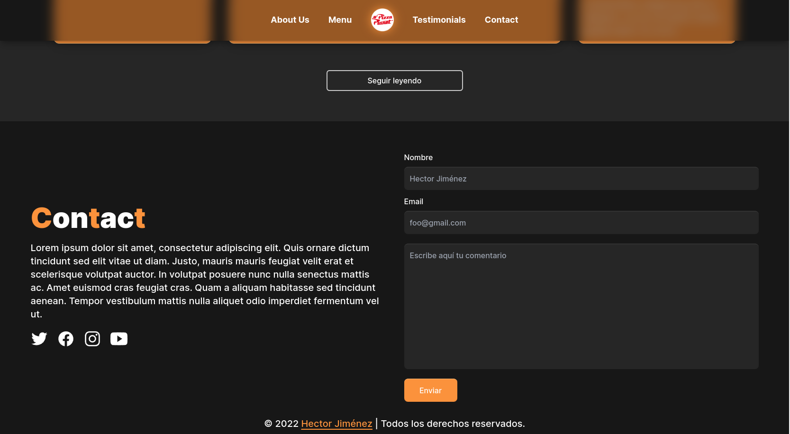

Página web de Pizzas moderna. El fin de este proyecto fue implementar un Framework popular de CSS llamado TailwindCSS desde lo más básico a lo complejo; también se agregaron plugins como PostCSS y Autoprefixer, para hacer compatible el código con otros navegadores, además, tiene validación de formulario con JavaScript.
Sitio web: https://pizzaplanets.netlify.app/public/
Stack: Html, TailwindCSS & JavaScript

